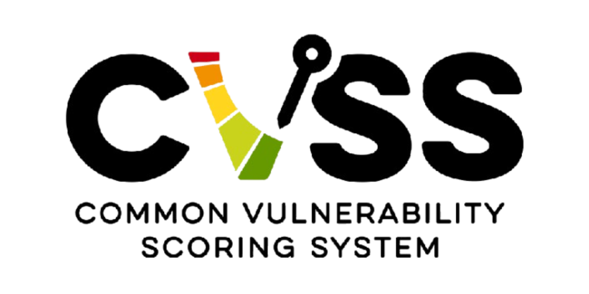

Evaluación de Vulnerabilidades con CVSS v3.1

La evaluación de vulnerabilidades es una actividad esencial dentro de la gestión de riesgos, ya que permite traducir hallazgos técnicos en criterios claros de prioridad para la toma de decisiones. En ese proceso, el Common Vulnerability Scoring System versión 3.1 (CVSS v3.1) funciona como un marco estandarizado para describir la severidad de una vulnerabilidad mediante métricas comparables entre distintos productos, entornos y organizaciones.
Su principal valor consiste en ofrecer una puntuación base reproducible y una representación compacta en forma de vector. A diferencia de una valoración meramente intuitiva, CVSS v3.1 separa las características intrínsecas de la vulnerabilidad en tres grupos de métricas: Base, Temporal y Ambiental. Para esta actividad se trabaja principalmente con el grupo Base, porque el escenario proporciona la información necesaria para construir el vector y obtener la puntuación inicial. A partir de esa puntuación es posible interpretar la gravedad del caso, ubicarlo en una categoría cualitativa y justificar qué tan urgente debe ser su mitigación dentro de una organización.
Contexto del material
Este conjunto de ejercicios está diseñado para reforzar conceptos fundamentales como:
- La importancia de CVSS como marco abierto para comunicar las características y la severidad de vulnerabilidades de software, hardware y firmware.
- La diferenciación de los tres pilares: métricas Base (intrínsecas y constantes), Temporales (cambiantes en el tiempo) y Ambientales (contexto de la organización).
- La anatomía y desglose de una cadena vector y su traducción a la escala cualitativa oficial.
- El uso práctico de la calculadora oficial para la toma de decisiones y priorización operativa.
1. Métricas base utilizadas en la actividad
A continuación se describen las métricas del grupo Base evaluadas en el escenario técnico:
| Métrica Base | Valor Asignado | Descripción Técnica |
|---|---|---|
| Attack Vector (AV) | Network (N) | Indica que la vulnerabilidad puede explotarse a través de la red, sin requerir acceso físico al equipo vulnerable. |
| Attack Complexity (AC) | Low (L) | Significa que la explotación no exige condiciones especiales o pasos excepcionales; el ataque es relativamente sencillo. |
| Privileges Required (PR) | High (H) | Indica que el atacante necesita privilegios elevados antes de explotar la vulnerabilidad, reduciendo la facilidad del ataque. |
| User Interaction (UI) | None (N) | Señala que no se requiere interacción del usuario para que la explotación tenga éxito. |
| Scope (S) | Unchanged (U) | Indica que el impacto permanece dentro del mismo ámbito de seguridad del componente vulnerable. |
| Confidentiality (C) | Low (L) | Representa un impacto bajo o afectación parcial sobre la confidencialidad de la información. |
| Integrity (I) | Low (L) | Representa un impacto bajo o afectación limitada sobre la integridad de los datos. |
| Availability (A) | Low (L) | Representa un impacto bajo o pequeñas interrupciones del servicio sobre la disponibilidad del sistema. |
2. Escenario Evaluado
Una organización detecta una vulnerabilidad en un sistema web interno con las siguientes características extraídas del análisis:
- 1. Puede explotarse a través de la red.
- 2. La explotación requiere baja complejidad.
- 3. Se necesitan privilegios elevados.
- 4. No requiere interacción del usuario.
- 5. No cambia el alcance.
- 6. El impacto en Confidencialidad, Integridad y Disponibilidad es Bajo.
3. Cadena Vector Construida
Con base en la información proporcionada y con ayuda de la calculadora oficial, se generó la siguiente cadena estructurada:
CVSS:3.1/AV:N/AC:L/PR:H/UI:N/S:U/C:L/I:L/A:L
4. Interpretación Técnica
A pesar de que la vulnerabilidad requiere privilegios elevados (PR:H), continúa siendo relevante porque puede explotarse remotamente a través de la red (AV:N) y con baja complejidad (AC:L), lo que significa que un atacante que ya haya obtenido acceso privilegiado mediante robo de credenciales, escalamiento previo o cuentas comprometidas podría explotarla fácilmente sin necesidad de interacción del usuario (UI:N).
Esto incrementa el riesgo dentro de entornos corporativos donde existen múltiples cuentas administrativas o donde un atacante ya logró una intrusión inicial. El tipo de atacante que podría explotarla corresponde principalmente a un actor con conocimientos técnicos intermedios o avanzados, como ciberdelincuentes organizados, insiders maliciosos o grupos APT que ya posean acceso privilegiado dentro de la infraestructura.
El hecho de que el alcance permanezca sin cambios (S:U) indica que la vulnerabilidad sólo afecta recursos dentro del mismo ámbito de seguridad comprometido y no permite expandir privilegios hacia otros dominios o sistemas externos. Finalmente, que el impacto sea bajo (C:L/I:L/A:L) significa que la explotación produce afectaciones limitadas: el atacante podría acceder parcialmente a información o modificar algunos datos, pero sin comprometer completamente el sistema.
5. Cálculo de Puntuación y Escala Cualitativa
Al procesar el vector anterior dentro de la plataforma oficial, se obtienen los siguientes resultados analíticos:
- Puntuación Base del Escenario: 4.7
- Categoría de Severidad: MEDIA
Según la especificación CVSS v3.1, la escala oficial se distribuye de la siguiente manera: Baja (0.1-3.9), Media (4.0-6.9), Alta (7.0-8.9) y Crítica (9.0-10.0).
Conclusión y reflexión técnica
El uso de CVSS v3.1 en este escenario permite transformar una descripción técnica de la vulnerabilidad en un criterio de severidad claro y comparable. La construcción del vector mostró que, aunque el impacto sobre confidencialidad, integridad y disponibilidad es bajo, la explotación remota y la ausencia de interacción del usuario representan condiciones que siguen justificando atención prioritaria. El requisito de privilegios elevados reduce el potencial de explotación, pero no elimina el riesgo.
La puntuación base obtenida, 4.7, ubica la vulnerabilidad en la categoría Media, por lo que su corrección no debería postergarse indefinidamente, especialmente si afecta un sistema web interno con valor operativo para la organización. En términos de gestión, este resultado demuestra que CVSS no sólo sirve para clasificar vulnerabilidades, sino también para sustentar decisiones de mitigación con un lenguaje técnico estandarizado. Para una priorización más precisa, la valoración base debe complementarse con métricas temporales y ambientales que reflejen las condiciones reales del entorno.